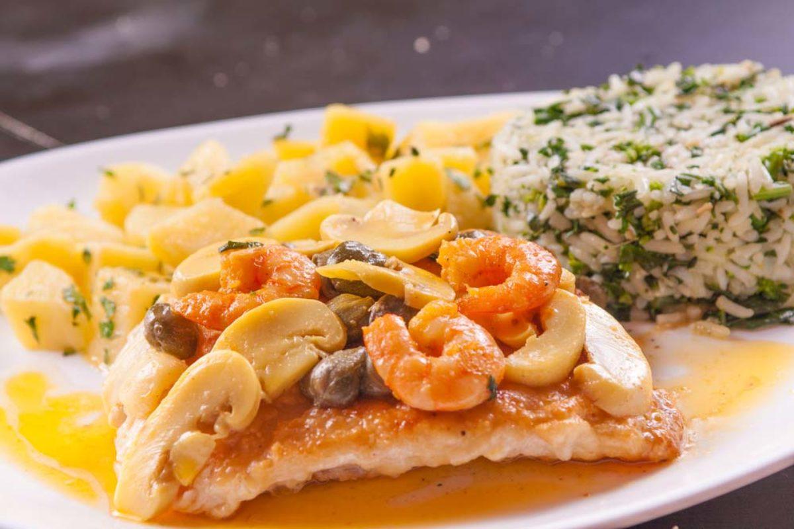
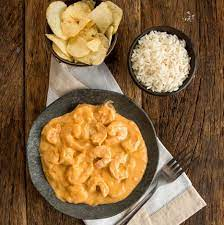

Filé de peixe fresco do dia, grelhado ao molho de champignon, camarão e alcaparras. É acompanhado de verduras na manteiga e arroz.
 ">Versão de strogonoff do Marettimo com frutos do mar flambados no conhaque, a moda do chef. Acompanha arroz branco e batata em chips.
